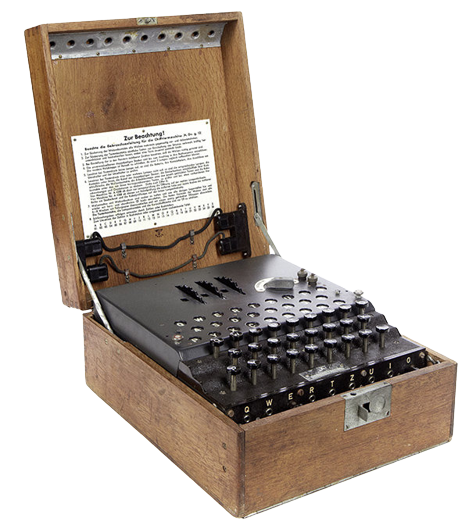

Kto złamał „Enigmę” ?
Marian Rejewski odczytał pierwsze informacje, które były przesyłane za pośrednictwem niemieckiej maszyny szyfrującej „Enigma”.
Jerzy Różycki – matematyk, kryptolog pracownik radiokontrwywiadu wojskowego z kraju - polska (Biuro Szyfrów Referat 4) Oddziału II Sztabu Głównego WP.
Henryk Zygalski – polski matematyk i kryptolog, wynalazca koncepcji płacht Zygalskiego, dzięki którym on oraz Marian Rejewski i Jerzy Różycki złamali kod Enigmy.
Enigma
Strona głowna
Maszyna enigma
